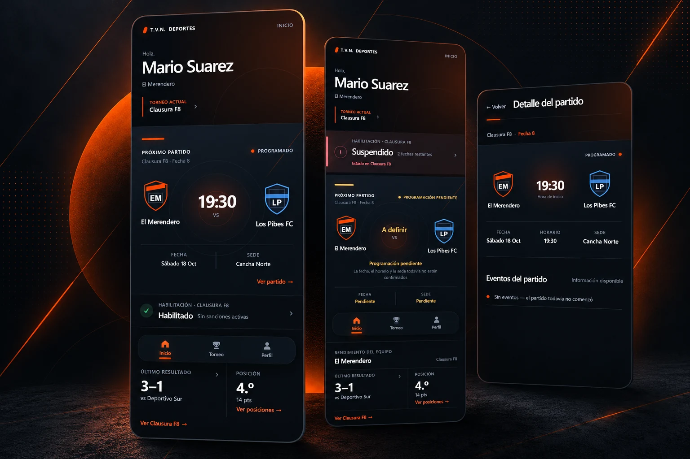

Case study 01
Copateur Mobile
Reframing a public, tournament-first web experience into a personalized mobile product for authenticated amateur football players.
Read case study
Product Designer · Buenos Aires
I’m Giuliana, a Product Designer who connects user needs, business goals, and thoughtful interface decisions—from early framing through delivery.
01 / Selected Work
Two case studies showing how research, product thinking, interaction design, and delivery come together.
Case study 01
Reframing a public, tournament-first web experience into a personalized mobile product for authenticated amateur football players.
Read case study

 Shipped product
Shipped product
Case study 02
Connecting discovery, evaluation, organization, and download across a responsive library of editable creative assets.
Read case study02 / About me
I’m a Product Designer based in Buenos Aires, creating human-centered digital experiences that balance what people need with what a product needs to achieve. My background in communication helps me ask better questions, clarify ideas, and make decisions with intent.
I work across product framing, UX flows, interface design, and prototyping in Figma, using reusable patterns to keep experiences coherent as they grow. I value close collaboration with product and engineering, and I stay involved through handoff and implementation to protect both usability and visual quality.
03 / How I work
Frame the product problem through context, constraints, user needs, business goals, existing evidence, research, and feedback.
Translate that understanding into information architecture, journeys, flows, priorities, and product logic.
Move from early thinking into interface design, prototyping, reusable patterns, and iterative visual refinement.
Collaborate through handoff, behavior clarification, implementation review, visual QA, and functional QA.
Keep exploring
Explore the research, product decisions, flows, visual systems, and implementation thinking behind each project.